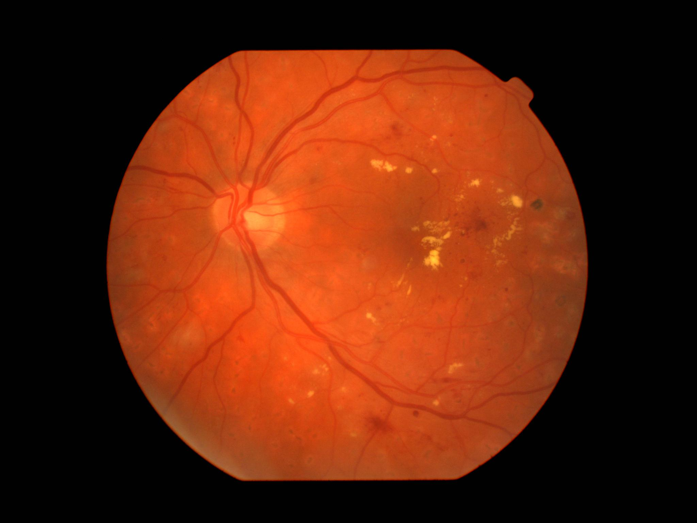
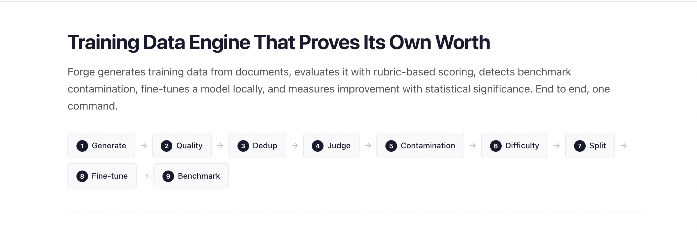
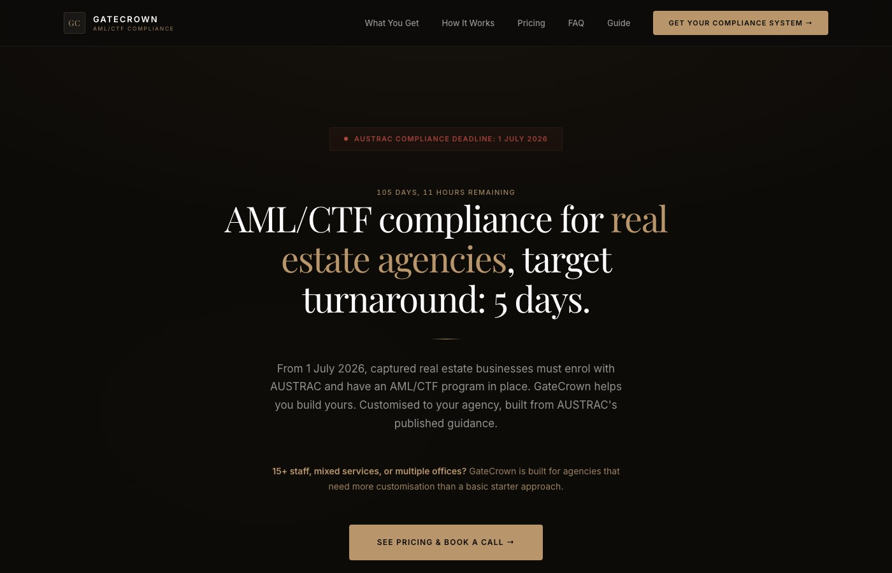

01
Retinal Disease Classifier
Zero-shot and linear-probe transfer of foundation models for diabetic retinopathy and glaucoma. 0.92 AUROC with 5-20% labels.
View projectI build AI / ML systems and publish source-backed analysis on the AI stack — chips, packaging, agents, and the edge.

Zero-shot and linear-probe transfer of foundation models for diabetic retinopathy and glaucoma. 0.92 AUROC with 5-20% labels.
View project
End-to-end training data engine: generate, evaluate with LLM-as-judge, detect contamination, fine-tune with LoRA, run significance tests. 184 tests, +16.8% ROUGE-1.
View project
Compliance documentation service for Australian real-estate agencies facing new AUSTRAC AML/CTF obligations. 5-day customised programs.
View projectI’m an AI / Machine Learning engineer with a Master of Artificial Intelligence from Monash University. I work across foundation models, LLM systems, and computer vision — from retinal disease classifiers to text-to-SQL fine-tuning, and lately to long-form analysis of the AI stack.
Currently a Business Fellow at Perplexity AI, where I prototype LLM agent workflows and dig into AI product strategy. Based in Melbourne, building from idea to working tool.
Download resumeSource-backed essays on what’s actually being built underneath the AI economy — chips, packaging, agents, edge inference, and a few things in between.
Source-backed maps of the AI field — foundations, papers, manufacture, application, biology, and a living field manual of every term.
Five-layer taxonomy of AI techniques. Start here: how the field decomposes into models, data, training, deployment, and applications.
Knowledge graph of the 50 landmark AI / ML papers. Trace dependencies and see how the modern stack accumulated.
How AI is physically built — power, chips, TSMC, HBM, NVIDIA, cloud, data centres. 148 nodes, 73 companies, 79 source-backed Q&As.
Perplexity AI
Prototyping LLM agent workflows. Working on AI product strategy. Building no-code and low-code internal tools to automate analysis.
Monash University
Ran zero-shot and linear-probe experiments with the FLAIR vision-language model for retinal disease detection. Built the full Python / PyTorch research pipeline from scratch.
Monash University
Coursework in deep learning, NLP, computer vision, and reinforcement learning. Research focus: foundation models for medical imaging.
1337 Ventures
Researched ~400 Malaysian startups; categorised by sector, stage, and traction to map the early-stage ecosystem and support deal flow.
Also: DeepLearning.AI specialisations in ML, DL, and NLP · Google Data Analytics · 2023–2024
Got a project, a question, or just want to compare notes on the AI stack? Reach out.
pugalenthi0928@gmail.comOr send me a message directly